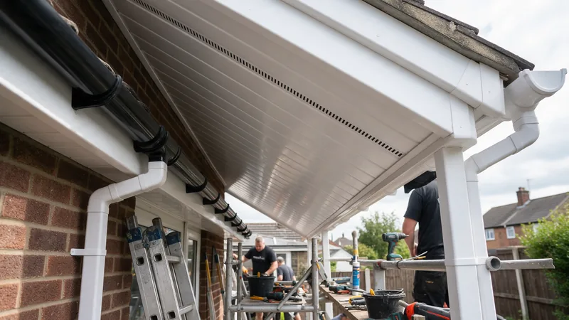

Generated photoGenerated for this demo. Not a photograph of a real job.
Two boards most people have never looked at
Stand under the eaves of a house and look up. There is an upright board facing you, which is the fascia, and a flat one above your head going back to the wall, which is the soffit. Between them they close off the gap where the roof structure meets the top of the wall, and they are doing more work than their looks suggest.
They are also the two parts of a house most likely to have been painted instead of repaired for thirty years, which is why a lot of what we get rung about is a gutter problem with a timber cause.
The four parts of a roofline
Why the fascia matters more than it looks
Every gutter bracket on the house is screwed into the fascia. That is the whole load path for the water coming off your roof: tiles, gutter, bracket, screw, fascia board. When the board goes soft, the screws stop gripping, a bracket starts to pull, and the run drops at that point. Water then stands where the dip is, which makes it heavier, which pulls harder.
So a gutter that has sagged between two brackets is usually telling you about the board behind it. Rehanging the same gutter on new screws into the same soft timber buys a year. That is the point at which an honest firm talks about the fascia rather than selling you another repair.
Why the soffit carries the ventilation
A cold roof space needs air moving through it. Without that, warm damp air from the house that gets into the loft condenses on the cold underside of the roof, and you get damp timber, damp insulation and sometimes mould, all without a drop of rain getting in anywhere.
The usual way that air gets in is along the eaves, through the soffit. That is why a new uPVC soffit is fitted with a continuous ventilation strip in it, and why boarding the eaves over solid is a genuine mistake rather than a matter of taste. If you are getting a quote for soffits, ask where the ventilation is going. It is a fair question and anybody good will have an answer ready.
One thing worth knowing: insulation pushed hard into the eaves can block that airway from the inside even when the soffit is perfect. If somebody has topped up a loft enthusiastically, the vents can be doing nothing. Eaves trays exist for exactly that, and it is worth a look in the loft with a torch.
Capping, and what it hides
Capping, sometimes called over boarding, is a thin uPVC skin screwed over the existing timber fascia. It is quicker, it uses less material, it is cheaper, and from the ground on the day it is finished it looks exactly like a full replacement.
What it does is leave the old board where it is. If that timber was wet, it is still wet, and now it is sealed behind plastic with less chance of drying. If it was soft, the new fixings are going into it. And it means nobody looked at the roof edge, which is the one genuinely valuable thing about taking the board off.
Capping is not always wrong. On sound, dry, well painted timber it can be a reasonable job. The problem is that you cannot tell from the ground which you have got, and the firm quoting is the one who knows. So the question to ask anybody is simple: are you taking the old board off, and if not, why not?
What the roof edge tells you when it is open
With the fascia off, you can see the rafter feet, the wall plate they sit on, and whether the roofing felt turns down into the gutter the way it should or has perished where the sun has been getting at it for forty years. On a lot of older houses there is no felt at all, which is normal for the age and worth knowing about.
None of that is visible any other way, and it is only open on this one job. A firm that takes photographs and tells you what is there, including when the answer is that it is all fine, is giving you something worth having.
Signs yours have had it
- Paint that will not stay on. Blistering and flaking that comes back a year after painting means the moisture is coming from inside the wood, not the weather.
- A screwdriver going in. The honest test, and the one anybody up a ladder can do. If the point pushes into the board with thumb pressure, the board is done.
- A gutter that has dropped between brackets. Usually the board, as above.
- Daylight or birds in the eaves. A gap at the soffit means weather and wildlife are getting into the roof space.
- Green or black along the bottom edge of the fascia. Water is going down the back of the gutter rather than off the front, which is a setting out problem that is quietly rotting the board.
What we would not claim
You will not find a guarantee, a scheme, an approval or a figure for how long the firm has been going anywhere on this site, because this firm is a demo and all of that would be invented. On a real site those are exactly the things that should be in writing rather than on a web page: what is covered, for how long, and who you ring if it is not right.
Written for this demo from general trade knowledge. It is not advice on your property, and anything structural or on the roof itself wants somebody looking at the actual house.
More advice
While you are here.
 Generated photo
Generated photoWhy gutters overflow, and it is not always leaves
Four causes, in the order they actually turn up, and why the cheapest one to fix is the one to rule out first.
 Generated photo
Generated photoRepair or replace your roofline
When one length and a seal will do, when the whole run has had its day, and the shortcut to be careful of.
Want somebody to look at the actual run?
Tell us which side of the house and your postcode. Twenty minutes with a ladder beats any article.